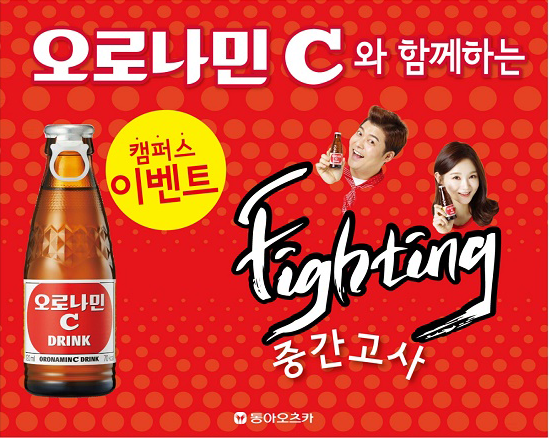
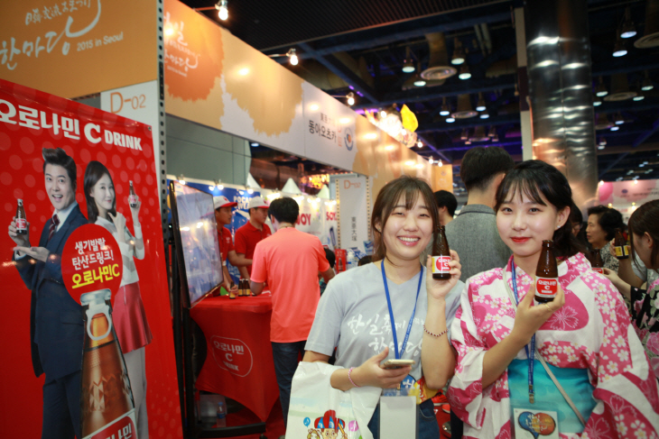
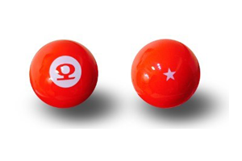
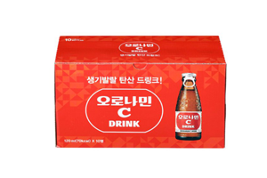
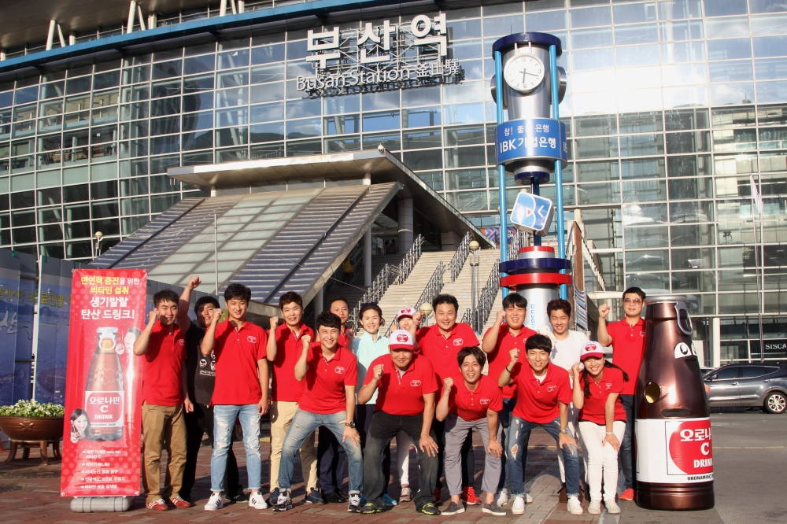
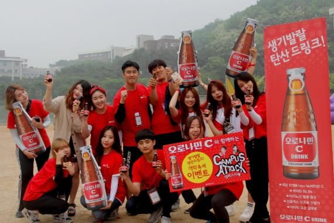
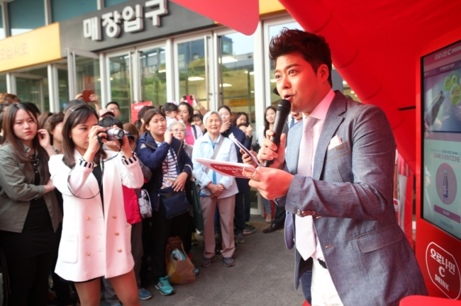
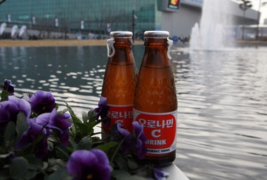
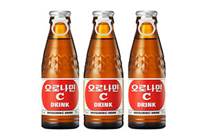
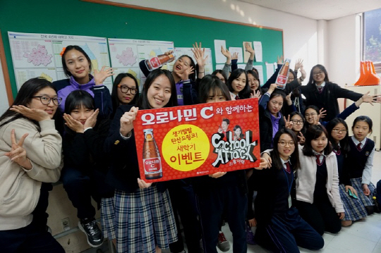

뉴스 섹션
생기발랄 탄산드링크 오로나민C의 최신 소식을 전해드립니다.
[보도자료]오로나민C,강력해진 '깨방정' 전현무·홍진영 모델 발탁
- 2016/03/24
- |
- 2507
- 241
동아오츠카가 2016년 오로나민C 광고모델로 초대 모델이었던 전현무를 2년 연속 기용하고 듀얼 모델로 홍진영을 발탁했다고 7일 밝혔다.
'나혼자산다', '해피투게더3', '수요미식회' 등의 출연으로 '국민 예능인'으로 거듭난 전현무는 지난해 2월 오로나민C 모델로 활동하면서 '깨방정 춤', '전현무 댄스' 등 온·오프라인상의 수많은 패러디물을 이끌었다.
동아오츠카는 다소 무거운 느낌이던 드링크시장을 오로나민C의 생기발랄한 컨셉과 전현무의 재치가 더해져 이미지 개선에 도움을 줬다며 2년 연속 오로나민C 모델로 발탁한 이유를 설명했다.
오로나민C 듀얼 모델은 뛰어난 미모와 특유의 애교로 사랑받고 있는 홍진영으로 선정됐다. 홍진영은 '3대천왕', '찾아라 맛있는 TV' 등 각종 예능프로를 오가며 방송가 블루칩으로 떠오르고 있으며, 특히 평소 전현무와 친분이 있는 것으로 알려져 이들의 시너지가 기대를 모으고 있다.
김규준 동아오츠카 마케팅전략팀 팀장은 "오로나민C는 남녀노소 누구나 즐길 수 있는 드링크로, 이와 같은 컨셉을 잘 소화해 낼 수 있는 모델을 찾았다"며 "전현무와 홍진영이 가진 무한 긍정에너지가 소비자들에게 재미를 줄 것"이라고 전했다.
전현무와 홍진영은 지난주 오로나민C TVCF 촬영을 마쳤으며, 오로나민C 신규광고는 4월초 방영될 예정이다.
[보도자료]동아오츠카, ‘오로나민C 샴페인 캠페인’ 개최
- 2015-12-30
- |
- 841
- 54
동아오츠카는 연말을 맞아 '퐁! 소리 나는 오로나민C 샴페인 캠페인'을 진행한다고 11일 밝혔다.
이번 캠페인은 오로나민C의 맥시캡(Maxi-Cap)을 알리기 위해 마련됐다. 맥시캡은 지렛대 원리를 적용한 새로운 방식의 안전마개로 한 번에 분리되는 원터치 캡이어서 쉽게 개봉할 수 있다는 장점이 있다.
동아오츠카는 오는 30일까지 SNS 경품 이벤트도 진행한다. 참여 방법은 페이스북, 인스타그램, 블로그 등 SNS을 이용해 오로나민C로 즐기는 파티 장면을 공유하면 된다. 추첨을 통해 ▲백화점상품권(10만원?명) ▲외식상품권(5명) ▲영화예매권(10명) ▲문화상품권(10명) 등을 증정한다.
[보도자료]오로나민C "CM송은 피하고 비타민은 잡으세요"
- 2015-11-30
- |
- 1278
- 200
대학수능능력시험이 하루 앞으로 다가왔다. 수험생 건강 관리와 집중력 향상을 위한 수능당일 간식이 주목 받고 있는 가운데 '웃픈(웃긴데 슬픈)' 제품이 있다.
최근 '수능금지곡'으로 지목 받은 오로나민C가 주인공. 오로나민C CM송은 '머리부터 발끝까지~오로나민C~'의 문구와 낯익은 멜로디가 반복되는 후크송으로 올 한해 큰 화제를 낳았다.
하지만 중독성 있는 멜로디가 귓가에 맴돌아 수험생들의 집중력을 방해한다고 해 '수능 전 절대 듣지 말아야 할 노래', '수능브레이커송' 등의 별명이 붙었다.
동아오츠카 측은 이와 같은 '웃픈' 상황에 수험생이 챙겨야 할 간식이라고 전했다.
오로나민C는 하루에 필요한 비타민B군과 비타민C, 필수아미노산 3종류가 함유되어 있어 간편하게 즐길 수 있는 종합영양드링크다.
특히 비타민 B군은 에너지 대사를 정상으로 만들어 체력을 회복시키고 불안과 우울증 증상을 완화시키는 역할을 하는데, 이처럼 체내에서 에너지와 관련된 역할을 많이 하기 때문에 흔히 '에너지 비타민'이라고 불리기도 한다.
동아오츠카 관계자는 "오로나민C는 나른해지는 오후에 건강하게 기분전환 할 수 있는 음료로 장시간 시험장에 앉아있는 수험생에게 제격"이라며 "CM송은 피하더라도 오로나민C의 영양은 꼭 챙겨가시길 바란다"고 전했다.
-
[보도자료]오로나민C,강력해진 '깨방정' 전현무·홍진영 모델 발탁
- 2016/03/24
- |
- 2507
- 241
-
[보도자료]동아오츠카,'오로나민C 샴페인 캠페인'개최
- 2015/12/30
- |
- 841
- 54
-
[보도자료]오로나민C "CM송은 피하고 비타민은 잡으세요"
- 2015/11/30
- |
- 1278
- 200
-
[보도자료]동아오츠카,대학교 캠퍼스 이벤트 진행
- 2015/10/12
- |
- 574
- 111
 -
[보도자료]동아오츠카,한일축제한마당'오로나민C·포카리스웨트'참여
- 2015/10/06
- |
- 322
- 44
 -
[보도자료]5개의 오로나민C볼을 찾아라...동아오츠카,온라인홍보단 발족
- 2015/09/10
- |
- 1117
- 114
 -
[보도자료]동아오츠카 "킨텍스서 오로나민C 2만5000병 쏜다"
- 2015/08/28
- |
- 887
- 87
-
[보도자료]동아오츠카 오로나민C 제품,재활용 용이 포장재 1등급 공식인증
- 2015/08/05
- |
- 742
- 113
 -
[보도자료]동아오츠카'오로나민C'부산역에 떴다
- 2015/07/27
- |
- 974
- 86

-
[보도자료]동아오츠카,2015 프로야구 올스타전서'오로나민C' 2만병 쏜다
- 2015/07/27
- |
- 1007
- 124
-
[보도자료]동아오츠카,일찍 일어나는 새가'오로나민C'를...? 직장인들에게 인기
- 2015/06/17
- |
- 774
- 52
-
[보도자료]동아오츠카,"활동량 많은 여름,'오로나민C'로 건강 챙기세요"
- 2015/06/03
- |
- 524
- 33
-
[보도자료]동아오츠카'오로나민C 생기발랄 캠퍼스 어택'진행
- 2015/05/22
- |
- 834
- 69
 -
[보도자료]동아오츠카,오로나민C 전현무 팬사인회 진행
- 2015/05/07
- |
- 1420
- 153
 -
[보도자료]동아오츠카, 포카리스웨트와 오로나민C로 '2015 수원 JS컵' 후원해
- 2015/05/01
- |
- 336
- 27
-
[보도자료]동아오츠카,어린이날 칠드런포칠드런 후원
- 2015/05/01
- |
- 445
- 47
-
[보도자료]동아오츠카 오로나민C, "서울대학교에서 인기 최고~
- 2015/04/30
- |
- 766
- 74
 -
[보도자료]오로나민C, 모델 전현무와 여의도 벚꽃축제 시음이벤트
- 2015/04/14
- |
- 997
- 67
-
[보도자료] 00억병 판매 신화 '오로나민C' 국내 시장도 접수?
- 2015/04/08
- |
- 1084
- 55
-
[보도자료]드링크시장 박카스 계보 잇나… 오로나민C 판매 '호조'
- 2015/04/03
- |
- 1134
- 77
 -
[보도자료]동아오츠카, ‘오로나민C 생기발랄 스쿨 어택’ 진행
- 2015/04/03
- |
- 744
- 37
 -
[보도자료]오로나민C "춘곤증엔 비타민B를 섭취하세요"
- 2015/04/03
- |
- 553
- 27

-
[보도자료]동아오츠카, 오로나민C 전속모델 '강민경 팬사인회' 진행
- 2015/03/06
- |
- 755
- 43
-
[보도자료]동아오츠카, 귀성객에게 '오로나민C' 3만병 쏜다
- 2015/02/17
- |
- 867
- 55